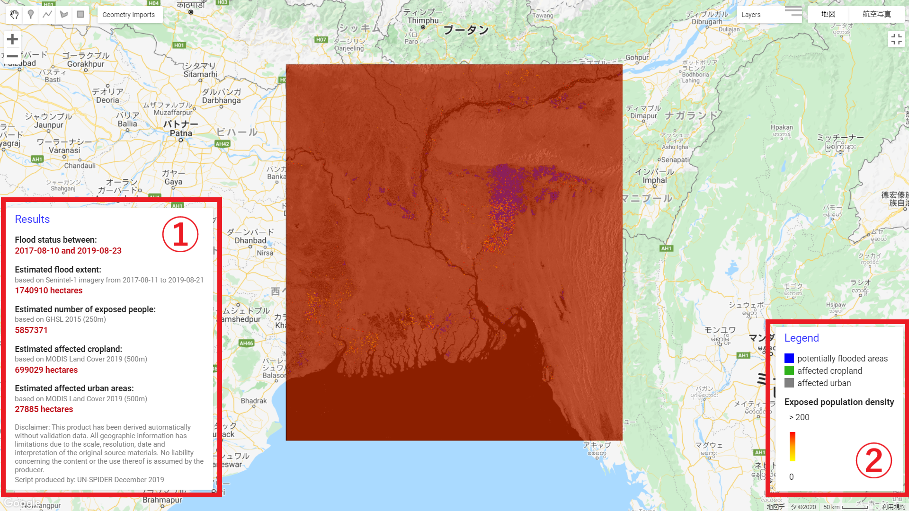

Chapter 6 MAP PRODUCTION
6.1 地図上に結果を表示する①

パネル表示①
6.1.1 結果が表示されるパネルの位置を設定する
var results = ui.Panel({
style: {
position: 'bottom-left',
padding: '8px 15px',
width: '350px'
}
});6.1.2 表示形式を設定する
var textVis = {
'margin':'0px 8px 2px 0px',
'fontWeight':'bold'
};
var numberVIS = {
'margin':'0px 0px 15px 0px',
'color':'bf0f19',
'fontWeight':'bold'
};
var subTextVis = {
'margin':'0px 0px 2px 0px',
'fontSize':'12px',
'color':'grey'
};
var titleTextVis = {
'margin':'0px 0px 15px 0px',
'fontSize': '18px',
'font-weight':'',
'color': '3333ff'
};6.1.3 結果のラベルを作成する
// タイトル
var title = ui.Label('Results', titleTextVis);
// "Flood status between"
var text1 = ui.Label('Flood status between:',textVis);
var number1 = ui.Label(after_start.concat(" and ",after_end),numberVIS);
// "Estimated flood extent"
var text2 = ui.Label('Estimated flood extent:',textVis);
var text2_2 = ui.Label('Please wait...',subTextVis);
dates(after_collection).evaluate(function(val){text2_2.setValue('based on Senintel-1 imagery '+val)});
var number2 = ui.Label('Please wait...',numberVIS);
flood_area_ha.evaluate(function(val){number2.setValue(val+' hectares')}),numberVIS;
// "Estimated number of exposed people"
var text3 = ui.Label('Estimated number of exposed people: ',textVis);
var text3_2 = ui.Label('based on GHSL 2015 (250m)',subTextVis);
var number3 = ui.Label('Please wait...',numberVIS);
number_pp_exposed.evaluate(function(val){number3.setValue(val)}),numberVIS;
// "Estimated affected cropland"
var MODIS_date = ee.String(LC.get('system:index')).slice(0,4);
var text4 = ui.Label('Estimated affected cropland:',textVis);
var text4_2 = ui.Label('Please wait', subTextVis)
MODIS_date.evaluate(function(val){text4_2.setValue('based on MODIS Land Cover '+val +' (500m)')}), subTextVis;
var number4 = ui.Label('Please wait...',numberVIS);
crop_area_ha.evaluate(function(val){number4.setValue(val+' hectares')}),numberVIS;
// "Estimated affected urban area"
var text5 = ui.Label('Estimated affected urban areas:',textVis);
var text5_2 = ui.Label('Please wait', subTextVis)
MODIS_date.evaluate(function(val){text5_2.setValue('based on MODIS Land Cover '+val +' (500m)')}), subTextVis;
var number5 = ui.Label('Please wait...',numberVIS);
urban_area_ha.evaluate(function(val){number5.setValue(val+' hectares')}),numberVIS;
// 責任・権利利関連
var text6 = ui.Label
('Disclaimer: This product has been derived automatically without validation data. All geographic information has limitations due to the scale, resolution, date and interpretation of the original source materials. No liability concerning the content or the use thereof is assumed by the producer.',subTextVis)
// Produced by...
var text7 = ui.Label('Script produced by: UN-SPIDER December 2019', subTextVis)6.1.4 パネルにラベルを加える
results.add(ui.Panel([
title,
text1,
number1,
text2,
text2_2,
number2,
text3,
text3_2,
number3,
text4,
text4_2,
number4,
text5,
text5_2,
number5,
text6,
text7]
));
// 地図にパネルを加える
Map.add(results);6.2 凡例を作成する②
(参考：https://mygeoblog.com/2016/12/09/add-a-legend-to-to-your-gee-map/)
6.2.1 パネルの位置を設定する
var legend = ui.Panel({
style: {
position: 'bottom-right',
padding: '8px 15px',
}
});6.2.2 塗分けの凡例を作成する
//凡例のタイトルを作成する
var legendTitle = ui.Label('Legend',titleTextVis);
//パネルにタイトルをつける
legend.add(legendTitle);
//凡例のスタイルを設定する
var makeRow = function(color, name) {
// ラベル(カラーボックス)を作成する
var colorBox = ui.Label({
style: {
backgroundColor: color,
// Use padding to give the box height and width.
padding: '8px',
margin: '0 0 4px 0'
}
});
// 説明をつける
var description = ui.Label({
value: name,
style: {margin: '0 0 4px 6px'}
});
// 垂直に並べる
return ui.Panel({
widgets: [colorBox, description],
layout: ui.Panel.Layout.Flow('horizontal')
});
};
// 色
var palette =['#0000FF', '#30b21c', 'grey'];
// 凡例の名前を設定する
var names = ['potentially flooded areas','affected cropland','affected urban'];
// 色と名前を加える
for (var i = 0; i < 3; i++) {
legend.add(makeRow(palette[i], names[i]));
} 6.2.3 “Exposed population density”の凡例を作成する
var legendTitle2 = ui.Label({
value: 'Exposed population density',
style: {
fontWeight: 'bold',
fontSize: '15px',
margin: '10px 0 0 0',
padding: '0'
}
});
// パネルにタイトルをつける
legend.add(legendTitle2);
// 凡例を作成する
var lon = ee.Image.pixelLonLat().select('latitude');
var gradient = lon.multiply((populationExposedVis.max-populationExposedVis.min)/100.0).add(populationExposedVis.min);
var legendImage = gradient.visualize(populationExposedVis);6.3 地図上に凡例を表示する
// 凡例の一番上に文章を作成する？
var panel = ui.Panel({
widgets: [
ui.Label('> '.concat(populationExposedVis['max']))
],
});
legend.add(panel);
// 画像からサムネイルを作成する
var thumbnail = ui.Thumbnail({
image: legendImage,
params: {bbox:'0,0,10,100', dimensions:'10x50'},
style: {padding: '1px', position: 'bottom-center'}
});
// 凡例にサムネイルをつける
legend.add(thumbnail);
// 凡例の一番上に文章を作成する？
var panel = ui.Panel({
widgets: [
ui.Label(populationExposedVis['min'])
],
});
legend.add(panel);
// 地図上に凡例を表示させる
Map.add(legend);